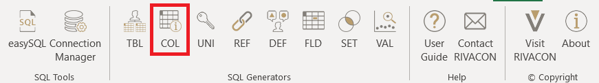
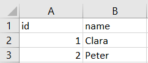
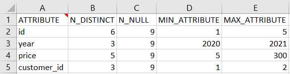
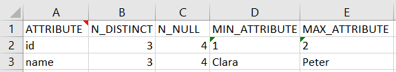
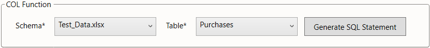

COL
Summary of table attribute
The COL generator is used to create an overview of the columns of a table. It may be used directly as a worksheet function. Rather than doing this, we suggest using the COL dialog from the menu bar, especially when using this function for the first time.

Figure 1: location of the COL ribbon
Example
Consider the database of a retailer with two entities: purchases and customers.
purchases consists of four attributes, purchase_id, year, price, and customer_id while customers consist of id and name.
This is demonstrated by the below example.
 |
 |
|---|---|
| Table 1: purchases | Table 2: customers |
The COL generator creates an overview of the values in each column from a chosen table. This overview contains:
N_DISTINCT, the number of distinct entries in the columnN_NULL, the number of entries set to nullMIN_ATTRIBUTE, the smallest value in the columnMAX_ATTRIBUTE, the largest value in the column
Therefore, if applying the generated SQL query to each table in our example, it produces the below tables as output.
|  |  |
|---|---|
| Table 3: Executed UNI for purchases | Table 4: Executed UNI for customers |
Settings
The pattern is instantiated via two parameters related to the selection of the table:
- the
schema
(providing for databases where identically named tables may exist in different schemas) - the
table
In the below screenshot, we illustrate how the parameters would be chosen to implement the first example overview described above.
We assume, that the data is stored in an Excel workbook "Test_Data.xlsx" with purchases stored in the worksheet purchases.
 Figure 2: COL settings